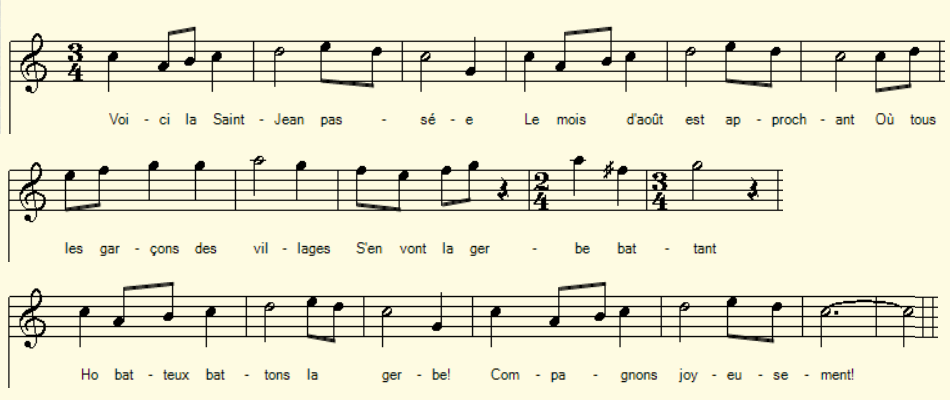

|
A propos de ce chant: Voici la Saint-Jean passée Nous avons serré les foins. Maintenant à d'autres soins Employons notre journée. "Chanson des bords de l'Yvette", dans le roman "Robert Stilfort" de Paul Perret (1830-1904), Paris, 1861, Michel Lévy (pp. 329-330)". L'action de ce roman se déroule en Bretagne, mais il paraît difficile d'être plus précis les toponymes (Rozé, Guesnain, Coesnon...) semblant être inventés. C'est peut-être dans ce roman que La Villemarqué a rencontré ce chant dont il a recherché, outre l'origine géographique exacte, le texte exhaustif, étant donné les analogies qu'il présente avec deux chants du Barzhaz de 1839, l'Aire neuve et la Fête de juin. Le texte reproduit les 10 strophes notées par La Villemarqué avec les annotations suivantes: Origine : Bas-Maine (Mayenne) "Voilà la Saint-Jean" - Chant de dépiqueur. *Dépiquage : action d'égrener les épis des céréales (en les foulant, les roulant ou les battant) (Petit Robert) "Après le battage, on allait prendre le fermier et la fermière et on les faisait asseoir sur une gerbe enrubannée et fleurie. On présentait un bouquet à la fermière et un serviteur chantait la chanson ci-dessus." |
About this song: Saint John's Day now is over And we have garnered the hay. And now to another care Let us use the rest of the day. "A song sung on the banks of the Yvette", in the novel "Robert Stilfort" by Paul Perret (1830-1904), Paris, 1861, Michel Lévy (pp. 329 -330) ". The plot of this novel is located in Brittany, but it seems difficult to be more precise since the toponyms (Rozé, Guesnain, Coesnon ...) are very likely fancy names. It is perhaps in this novel that La Villemarqué encountered this song of which he investigated, in addition to the exact geographical origin, the exhaustive text, on account of its analogies with two 1839 Barzhaz songs, l 'Aire neuve and the June Festival . The text reproduces the 10 stanzas noted by La Villemarqué with the following annotations: Origin: Bas-Maine (Mayenne) Here is the Saint-Jean - A "podding song". * Podding: action of shelling the ears of cereals (by treading, crushing or threshing them) (Dictionary Petit Robert) "After the threshing, the farmer and his wife and make were asked to sit down among bunches of ribonned flowers. A bouquet was presented to the farmer and a servant sang the above song. " |
|
FRANCAIS 1. Voici la St Jean passée. Le mois daotû est approchant, Où tous 'garçons des villages Sen vont la gerbe battant. Refrain: Oh ! batteux battons la gerbe, Compagnons, joyeusement! 2. Par un matin je me lève Avec le soleil levant . Et jentre dedans une aire. Tous les batteux sont dedans Oh ! batteux. etc. 3. Je salue la compagnie, Les maitres et les suivants. Ils étaient bien vingt ou trente. Nest-ce pas un beau régiment ? 4. Je salue la jolie dame Et tous les petits enfants. Et dans ce jardin-là jentre Par une porte dargent. 5. Voila des bouquets quon apporte. Chacun va se fleurissant. A mon chapeau je nattache Que la simple fleur des champs. 6. Mais je vois la giroflée Qui fleurit et rouge et blanc, Jen veux choisir une branche Pour ma mie cest un prèsent.. 7. Dans la peine, dans louvrage, Dans les divertissements, Je noublie jamais ma mie: Cest ma pensée en tout temps. 8. Ma mie recoit de mes lettres Par lallouette des champs. Elle menvoie les siennes Par le rossignol chantant. 9. Sans savoir lire ni écrire, Nous lisons ce qui est dedans. Il y a dedans ces lettres : "Aime moi : je taime tant." 10. Viendra le jour de la noce. Travaillons en attendant. Devers la Toussaint prochaine Jaurai tout contentement. Oh ! batteux etc. |
ENGLISH TRANSLATION p. 97 1. St John's Day now is for another Year over. August's drawing near When the country lads from all over On the sheaf threshing floor appear. Refrain: The sheaves let us thresh, thresh, O threshers, O friends happily, let us thresh! 2. I wake up early in the morning I wake up with the rising sun I see when entering the threshing Floor other threshers coming on. The sheaves. etc. 3. I first greet all the threshing party Master and staff: they are not few. Twenty of them there are or thirty Now, isn't that a stately crew? 4. I shall first greet the gracious lady And all her fair kids on the floor. When in this garden I got entry It thought I passed a silver door. 5. Here are bouquets that for us they bring: In beauty to nothing they yield. To my hat I won't tie anything But a shy flower of the fields. 6. But I have spied a gay wallflower That's blooming there in red and white, I'll choose for my lass, since I love her, A branch all colourful and bright ... 7. Neither in pain, nor in hard labour, Nor any joyful merriment Do I forget, as a true lover, My dearest lass any moment. 8. My sweetheart will receive my letter Forwarded by the skylark's mail. In turn she will send me hers over Carried by a fair nightingale. 9. Though we don't know how to read or write, What's written in them is quite clear: The contents of them we know all right "Love me, as I love you, my dear." 10. The wedding day will come, my darling. Let us work while we're waiting still Towards the next All-Saints Day, I think, Of happiness we'll have our fill. Translated by Ch. Souchon (c) 2021 |